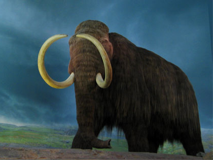
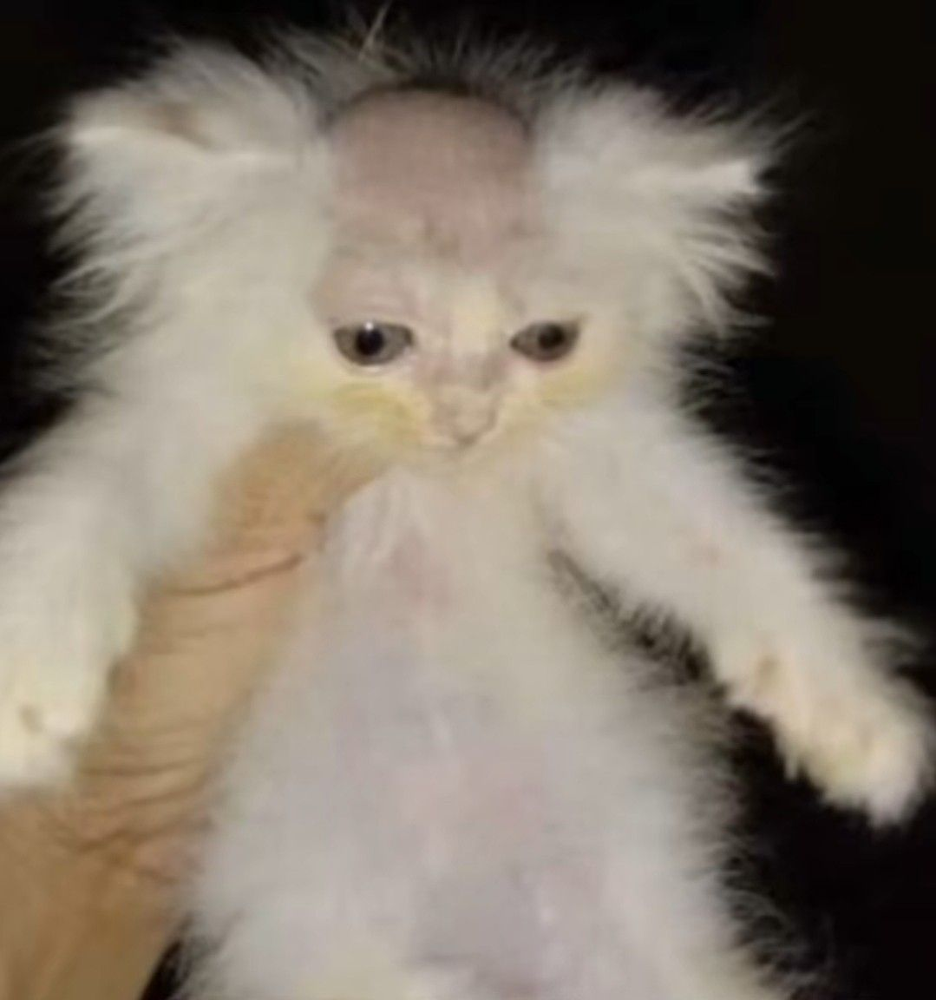
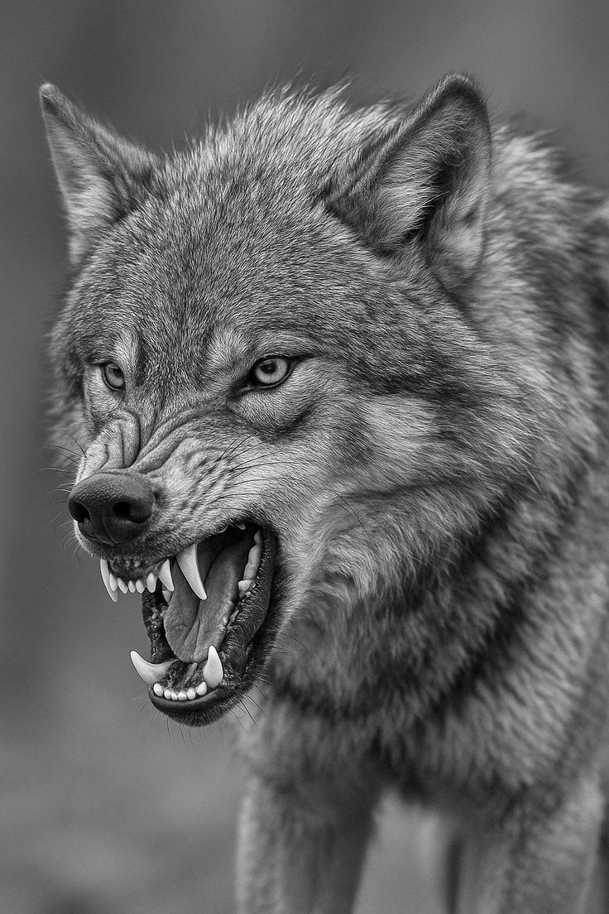

RayoMC: El es muy tranuilo, le gusta jugar con las vacas y con la visita, una vez salio en una peli y desde eso es famosa.


salchi: Este es mi caballo es muy tranuilo, pero caundo vomita sale de colores, y de vez en cuando sale volando pero ya me acostumbre.

El greñas: Es una baca? no se, pero es grande y parece un rasta por esas greñas, es calamado pero tiene cara de drogadicto.

Joji jose: Su pasatiempo es ser el, no hace nada, solo respira y eso por que si no lo hace se muere

Alan Birto: Biablo loco, un T-REX que toca el bajo 10/10, de verdad se gana su comida.

algodon de azucar: llego a la casa y la verdad me dio miedo sacarlo asi que el me adopto...